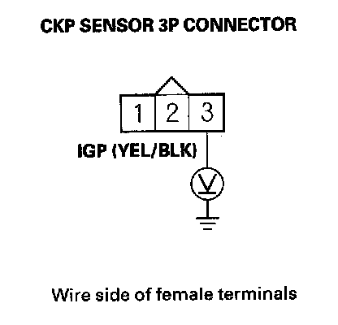
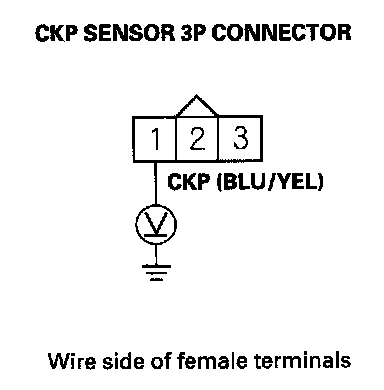
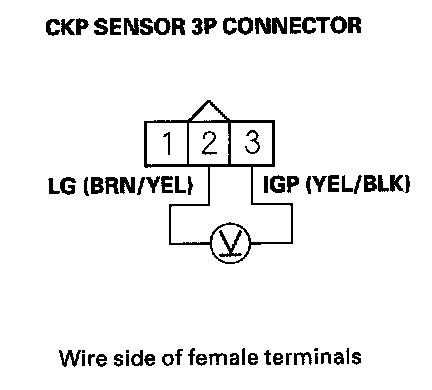
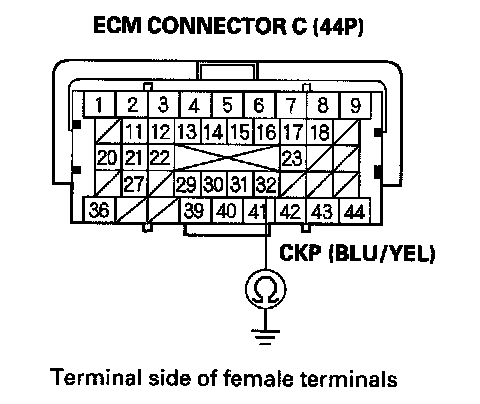
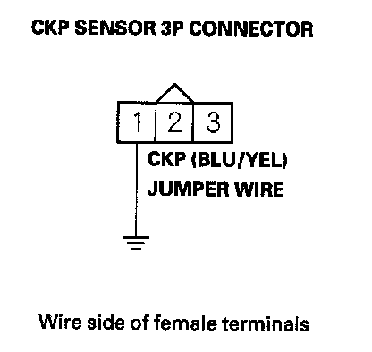
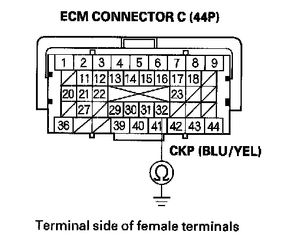

DTC Troubleshooting
DTC P0335: CKP Sensor No SignalNOTE: Before you troubleshoot, record all freeze data and any on-board snapshot, and review the general troubleshooting information.
1. Turn the ignition switch ON (II).
2. Clear the DTC with the HDS.
3. Start the engine.
4. Check for Temporary DTCs or DTCs with the HDS.
Is DTC P0335 indicated?
YES - Go to step 5.
NO - Intermittent failure, the system is OK at this time. Check for poor connections or loose terminals at the CKP sensor and the ECM.
5. Turn the ignition switch OFF.
6. Disconnect the CKP sensor 3P connector.
7. Turn the ignition switch ON (II).

8. Measure voltage between CKP sensor 3P connector terminal No.3 and body ground.
Is there battery voltage?
YES - Go to step 9.
NO - Repair open in the wire between the CKP sensor and PGM-FI main relay 1, then go to step 19.

9. Measure voltage between CKP sensor 3P connector terminal No.1 and body ground.
Is there about 5 V?
YES - Go to step 10.
NO - Go to step 11.

10. Measure voltage between CKP sensor 3P connector terminals No.2 and No.3.
Is there battery voltage?
YES - Go to step 17.
NO - Repair open in the wire between the CKP sensor and G101, then go to step 19.
11. Turn the ignition switch OFF.
12. Jump the SCS line with the HDS.
13. Disconnect ECM connector C (44P).

14. Check for continuity between ECM connector terminal C32 and body ground.
Is there continuity?
YES - Repair short in the wire between the ECM (C32) and the CKP sensor, then go to step 19.
NO - Go to step 15.

15. Connect CKP sensor 3P connector terminal No.1 to body ground with a jumper wire.

16. Check for continuity between ECM connector terminal C32 and body ground.
Is there continuity?
YES - Go to step 26.
NO - Repair open in the wire between the ECM (C32) and the CKP sensor, then go to step 19.
17. Turn the ignition switch OFF.
18. Replace the CKP sensor.
19. Reconnect all connectors.
20. Turn the ignition switch ON (II).
21. Reset the ECM with the HDS.
22. Clear the CKP pattern with the HDS.
23. Do the ECM idle learn procedure.
24. Do the CKP pattern learn procedure.
25. Check for Temporary DTCs or DTCs with the HDS.
Is DTC P0335 indicated?
YES - Check for poor connections or loose terminals at the CKP sensor and the ECM, then go to step 1.
NO - Troubleshooting is complete. If any other Temporary DTCs or DTCs are indicated, go to the indicated DTC's troubleshooting.
26. Reconnect all connectors.
27. Update the ECM if it does not have the latest software, or substitute a known-good ECM.
28. Check for Temporary DTCs or DTCs with the HDS.
Is DTC P0335 indicated?
YES - Check for poor connections or loose terminals at the CKP sensor and the ECM. If the ECM was updated, substitute a known-good ECM, then recheck. If the ECM was substituted, go to step 1.
NO - If the ECM was updated troubleshooting is complete. If the ECM was substituted, replace the original ECM. If any other Temporary DTCs or DTCs are indicated, go to the indicated DTC's troubleshooting.